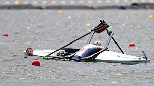

There is a common saying among rowers: there are two types, those who have flipped, and those who haven't ... yet.
I have flipped numerous times, especially in singles; it's nothing to be embarrassed about! Typically, capsizes will occur in smaller boats, though it is definently possible in larger boats also. Boats are more suceptible to flip in windy weather,
which is why it's best to have a land practice when the winds are above 15mph.
- As a reminder, rowers are required to pass the flip test before rowing.
- This is helpful to prepare you for the inevitable emergency of flipping on the water.
When somebody flipps, there are numerous safey measures in place:
- Always stay with the boat!
- Follow your coach's instructions, they know the circumstances on the water and will decide what is safest.
- In some cases, you will practice your flip test skill and return to the boat so that you can row out of danger.
- Other times, the coach might have you climb onto their safety launch to warm up and pump the water out of the boat.
- When there is no coach present: stay with the boat! Coaches can locate you easier, and you can climb onto it in serious emergency.
- Advanced rowers might allow you to climb on the stern of your boat to get your body out of the cold water.
- Although rowing shells are very expensive, your safety is always the priority; try and get out of the water as fast as possible to avoid hypothermia.
Everyone flips, even professional rowers!

Here are some 2022 Olympic rowers who flipped during their race :(